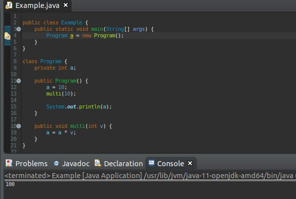
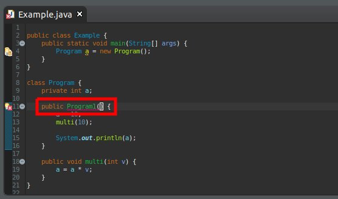

こんにちは。明月です。
これから「OOP(object-oriented programming:オブジェクト指向プログラミング)」の核心だと考えられるクラス(Class)に関して勉強します。
クラスは「Java」プログラムの中でメモリの構成単位でプログラムを動けるオブジェクトだと考えられます。
データタイプ単位では「int」や「float」などがありますが、オブジェクトとして変数を集まってプロシージャを作成し、実行する単位がクラス(Class)だと思います。
すなわち、メソッドだけや変数だけではプログラムを作成ができないし、実行することができません。最小単位でクラス(Class)が存在しなければならないと意味です。
私が今まで特に説明してなかったんですが、「main」関数を呼ばれるように下記とおりに作成しました。
public class program{
public static void main(String[] args){
}
}
例みたいに実行するために「main」関数だけ必要だってもクラス(Class)が囲まなければならないです。
クラスの場合は下記の要素をもっています。
| クラス要素 | 説明 |
|---|---|
| コンストラクタ | クラスの初期処理及び関連機能処理 |
| メンバー変数 | フィールドという呼ばれるグローバル変数 |
| 関数 | メソッド |
予想よりクラスが持っているメンバーはC#より多くないですね。
public class program{
//メンバー変数
private int a;
//コンストラクタ
public program() {
}
//関数
public int func() {
}
}
classは上の例みたいに構成されています。以前に変数と関数に関しては勉強したことがあるので、そんなに違和感がないと思いますが、コンストラクタは関数とは違いますね。
コンストラクタは関数と比べてリターンタイプがないです。なぜなら、クラスの生成する時に処理処理をここでするので、リターン値が必要ないからではないかと思いますね。
または関数はクラス名と同じ名で作成できません。ではコンストラクタは必ずクラス名とコンストラクタ名は一致しなければならないです。
メンバー変数はクラス中で使う変数らしく、変数ですね。
すべて前に「public」と言うアクセス修飾子があります。アクセス修飾子に関して様々の理解が必要なので別途で説明します。
link - 作成中
クラスを宣言するようには「new」キーワードを使います。「new」キーワードに関しても様々お話が必要と思いますが、簡単に説明すると「new」でクラスを割り合うとクラスのコンストラクタが呼ばれ、初期を行います。
link - 作成中
後、メンバー変数が割り合っててメモリに上がりますね。クラスサイズは変数のサイズの合計と同じです。割り合ってたクラスは関数を使います。

上の例は「Example」の中の「main」関数から始まります。参考に「static」関数はクラスの割り当てる可否と関係しずに、「クラス名.関数名」で実行ができます。この話も上の「new」キーワードを説明する時に詳しく説明します。
link - 作成中
「main」関数から始まって「Program」というクラスを「new」キーワードで宣言します。コンストラクタではメンバー変数の「a」にデータ「10」を入力して「multi」関数を呼び出します。後、「System.out.println」を利用して「a」の値を出力します。
結果は「100」という出力が出ますね。
上の例を見るとコンストラクタはクラス名と一致しますね。

上のイメージみたいにリターンタイプがないメソッド、すなわち、コンストラクタがクラス名と間違い場合にエラーマークが表示されます。
この部分の関しては「Java」だけではなく、「C言語」以降のプログラム言語は同じではないかと思います。
クラスの内部関数を使う方法とメンバー変数に関してはアクセス修飾子と「new」の概念の説明が必要なので、その時に含めて説明します。
- [Java] Java servletでインスタンスを初期する方法2019/10/17 07:15:48
- [Java] Spring web frameworkで発生する文字化けのEncoding設定2019/10/16 07:32:55
- [Java] Web Spring frameworkでfilter設定2019/10/15 20:12:35
- [Java] Web serviceのweb.xmlでエラーページ設定2019/10/14 20:13:44
- [Java] JPAのDAOをFactoryパターンで管理する方法2019/10/13 22:55:52
- [Java] JPAのSpring frameworkで依存性注入する方法2019/10/13 00:40:08
- [Java] JPAでDAOを生成する方法2019/10/11 07:30:14
- [Java] JPAでトランザクションの使用方法とオブサーバーパターンで共通トランザクション関数を作り方2019/10/10 07:29:43
- [Java] JPAのQuery を作り方2019/10/09 07:34:08
- [Java] JPAのEntityクラス設定(Cascade, fetch)2019/10/08 07:43:33
- [Java] JPAでpersistance.xml設定とentityクラス設定(@GeneratedValue設定)2019/10/07 07:38:13
- [Java] EclipseでJPAフレームワーク設定する方法2019/10/04 19:24:43
- [Java] Web spring frameworkのJSPで使う言語 JSTL - XML2019/10/03 20:02:06
- [Java] Web spring frameworkのJSPで使う言語 JSTL - 関数、データベース2019/10/02 21:00:22
- [Java] Web spring frameworkのJSPで使う言語 JSTL - コアー、フォーマッティング2019/10/01 21:48:08
- [C#] NSoupライブラリを利用してXMLとHTMLをパーシングする方法2020/04/14 19:34:15
- [C#] 日付フォーマット2020/04/09 20:53:20
- [C#] ログライブラリ(log4net)を設定する方法2020/04/08 13:04:22
- [C#] Zipの圧縮ファイルを解凍するコードを作成する方法2020/04/07 11:17:44
- [C#] Zip圧縮コードを作成する方法2020/04/06 14:56:13
- [C#] 数字フォーマット(お金表示及び小数点以下表示)2020/04/03 00:38:37
- [C#] コマンド(cmd)を実行する方法(Processクラス)2020/03/31 07:15:40
- [C#] FTPに接続してファイルダウンロード、アップロードする方法2020/03/27 19:20:14
- [C#] HttpWebRequestを利用してウェブページを読み込みする方法2020/03/27 00:23:19
- [C#] Base64のエンコード、デコードする方法2020/03/26 02:19:50
- [Java] 日付フォーマット(SimpleDateFormat)を使う方法2020/03/25 00:36:53
- [Java] サーブレット(Servlet)の環境でファイルアップロード(プログレスバーでファイルアップロード状態を表示する方法)する方法2020/03/24 00:48:21
- [Java] Spring環境でファイルアップロード(プログレスバーでファイルアップロード状態を表示する方法)する方法2020/03/22 23:15:12
- [Java] FTPに接続してファイルをダウンロード、アップロードする方法(FTPClient)2020/03/20 02:44:36
- [Window] WindowでFTPサーバを構築する方法2020/03/19 03:27:22